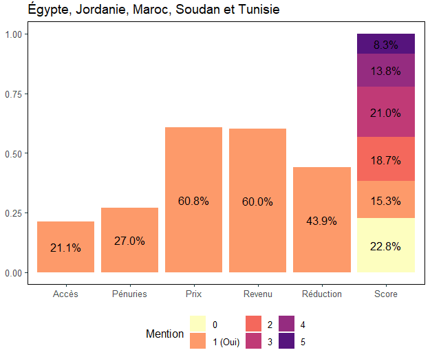

Antoine Castet - Research
Publications

- The impact of large-scale land acquisitions on food security in Africa, World Development, 179, July 2024. PDF
Abstract: Food insecurity is a major concern in most African countries. Large-scale land acquisitions (LSLAs) frequently have a negative impact on local communities. In this paper, I examine the impact of LSLAs on the nutritional status of neighboring children. To this end, I use a difference-in-differences methodology applied to LSLAs in a large number of African countries at different times since the early 2000s. I analyze data from Demographic and Health Surveys combined with data from the Land Matrix Initiative, supplemented by my own research, ultimately covering 18,276 children living in the vicinity of 45 LSLAs. I show that LSLAs have had a significant negative impact on child nutrition in Africa over the past two decades. Specifically, the dietary diversity scores of children living close to LSLAs were reduced by 20 per cent after acquisition. The results are robust to various statistical tests. I find no changes in work status or household assets. While the impact of LSLAs may be positive for agricultural practices, it is negative for child food security. The analysis highlights the importance of supporting local communities following foreign agricultural investment.

- Food security and Covid-19: An analysis of the MENA region, with Racha Ramadan, Revue d’Économie du Développement, 33(3–4), 2023. PDF
Abstract: We study the food situation of households in five countries in the Middle East and North Africa region during the Covid-19 pandemic. We show that household food security was negatively affected during the pandemic.
Working papers
- Water scarcity shapes the impact of large-scale land acquisitions on child nutrition in the Global South, with Julie Faure, Leonardo Bertassello, Davide Danilo Chiarelli, Sandra Eckert, Kyle Frankel Davis, Jampel Dell’Angelo, Paolo D’Odorico, Maria Cristina Rulli, Bhoktear Khan, and Marc F. Müller. Submitted.
[+] Abstract
Transnational land investments have surged in recent decades, reshaping rural landscapes in low- and middle-income countries. These large-scale land acquisitions (LSLAs) often displace smallholder farming and natural ecosystems, disrupting local food, water, and environmental systems. Yet, the ways these socio-environmental changes interact to affect household well-being remain poorly understood. We present a global analysis of over 400 georeferenced land deals, using a clustering algorithm to characterize cross-dimensional trade-offs and define LSLA archetypes with distinct policy relevance. Linking these to data from more than 84,000 children in Demographic and Health Surveys, we find that impacts on dietary diversity vary widely across archetypes, shaped by prior land use, water availability, and investment intent. The most severe adverse effects occur when LSLAs involve conversion to cash crop or plantation agriculture. In contrast, some deals-particularly those in already intensive agricultural regions-show potential to enhance dietary diversity, likely through spillover economic benefits. However, these gains vanish under conditions of water scarcity. Strikingly, we find a persistent association between water scarcity and negative nutritional outcomes, suggesting that water grabbing is a common and consequential feature of LSLAs. Our findings challenge the notion of LSLAs as uniform interventions and highlight the need for more differentiated, context-sensitive policy responses. Regulation should target the specific socio-environmental trade-offs associated with different types of land deals to better safeguard household well-being in affected regions.
- Climate Change and Gendered Structural Transformation in Africa, with Kibrom Abay and Martin Paul Jr.Tabe-Ojong. Submitted.
[+] Abstract
We examine whether and how climate change affects structural transformation in Africa. We also examine potential gendered impacts as well as heterogeneities across different population groups. Combining census data covering 12 African countries and four decades (1974–2014) with gridded temperature and precipitation data, we document that a 1\(^{\circ}\)C increase in decadal temperature increases employment in agriculture by about 6 percentage points while triggering a comparable decline in the share of employment in nonagricultural sectors. We also document heterogeneities in the impact of climate change and show that climate change leads to a gendered delay in structural transformation, with women and less-educated individuals more affected by the delay induced by climate change. These findings suggest that climate change can aggravate existing inequities in societies. We provide empirical evidence on potential mechanisms, including impacts through agricultural productivity and labor force participation. Medium-term increases in temperature reduce agricultural productivity while increasing demand for farm labor and hence labor force participation.
- The conquest of the desert: Land investment in Egypt. Job Market Paper
[+] Abstract
In Egypt, demographic pressure is driving people to populate and farm in the desert. The government is encouraging these pioneers to settle there to develop the agricultural and manufacturing sectors. The desert concentrates the dreams and hopes of a country facing many challenges. My study uses satellite and census data to analyze this expansion policy. Exploiting a historical boundary through a spatial regression discontinuity design, I show that in less than forty years the desert’s agricultural cover has almost caught up with that of the delta. Other economic and demographic indicators point to a widening gap between the two sides between 1992 and 2020. To document structural transformation, I use a difference-in-differences approach, comparing districts bordering the desert with those inland. Census data, available from 1960 to 2017, allow for a long-term observation. Compared to the heart of the delta, peripheral districts have significantly increased their share of agricultural employment at the expense of manufacturing and services. While food sovereignty is an important objective, this agricultural policy risks creating a two-speed structural transformation between the periphery and the core of the Delta. The analysis highlights the importance of supporting the emergence of manufacturing and services sectors in these desert areas.Book chapter
- Past, Present and Future of Food Security in Egypt, with Racha Ramadan, in Pathways to African Food Security: Challenges, Threats and Opportunities towards 2050, edited by Michiel de Haas, and Ken E. Giller, 2025. PDF
© Antoine Castet · Built with R Markdown